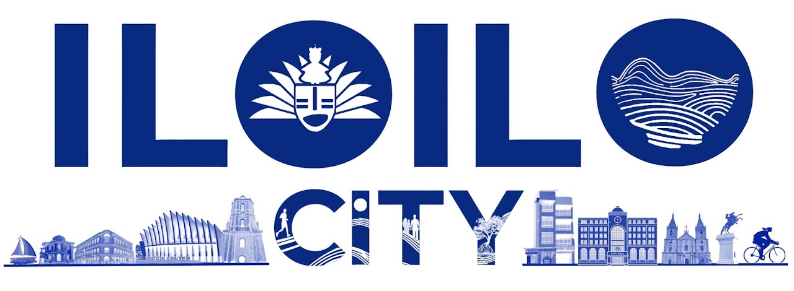

PROJECT BAHANDI
Explore Molo's rich cultural heritage through an interactive digital map featuring historical landmarks, traditional practices, local stories, and community memories. Discover the places, people, and traditions that shaped Molo's identity.
Explore the digital mapAbout the Project
PROJECT BAHANDI: An Interactive Showcase of Heritage and Identity of Molo, Iloilo City, Philippines is a digital heritage platform designed to showcase and preserve the cultural identity of Molo, Iloilo City. It provides an interactive way for learners and users to explore historical landmarks, traditional food, notable personalities, oral traditions, and community stories connected to Molo's heritage.
Through digital mapping and storytelling, the project transforms heritage learning into an engaging experience where users can discover the meanings, values, and memories behind Molo's cultural elements.
Molo: A District Rich in History and Culture
Molo is one of the historic districts of Iloilo City, known for its significant role in the cultural and economic development of the province. During the Spanish colonial period, Molo became an important trading center where different cultures and traditions blended. Its historical structures, ancestral houses, traditions, and community stories continue to reflect the district's unique identity.
Today, Molo's heritage remains alive through the people who preserve, share, and give meaning to its cultural resources.
PROJECT BAHANDI
An Interactive Showcase of Heritage and Identity
of Molo, Iloilo City, Philippines.
Explore Molo’s rich cultural heritage through an
interactive digital map featuring historical
landmarks, traditional practices, local stories,
and community memories. Discover the places,
people, and traditions that shaped Molo’s
identity.
Contact
- ✉️ stvepstudentcouncil18@gmail.com
- 📍 Luna St., La Paz, Iloilo City, Iloilo, Philippines, 5000
- 📘 INHS - STVEP Local Learner Government
"Preserving Molo’s stories, connecting generations, and celebrating the heritage shaped by its people."


© 2026 PROJECT BAHANDI: An Interactive Showcase of Heritage and Identity of Molo, Iloilo City, Philippines.
All Rights Reserved.